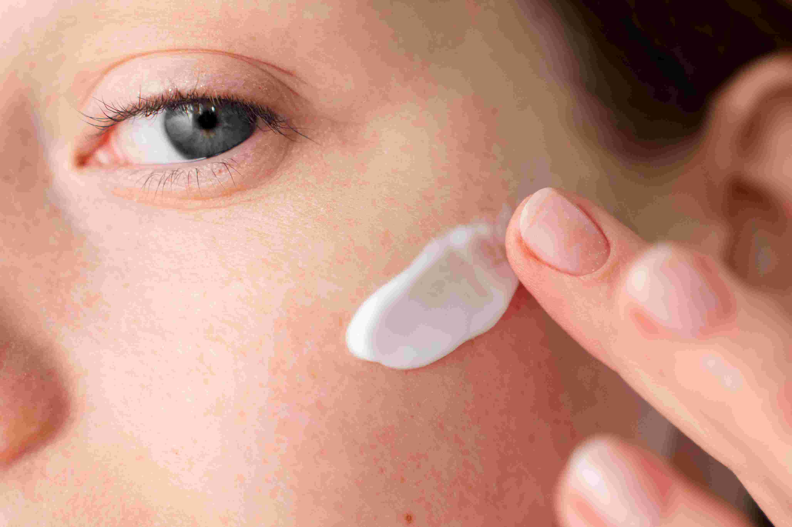
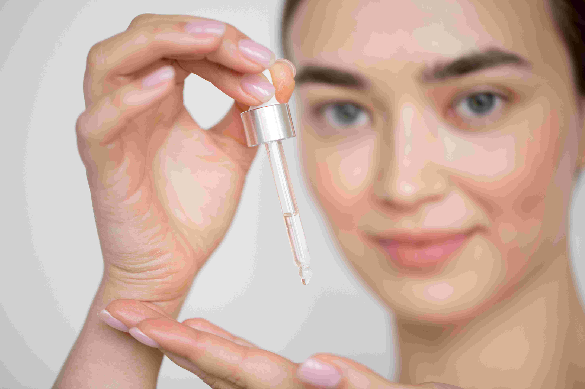
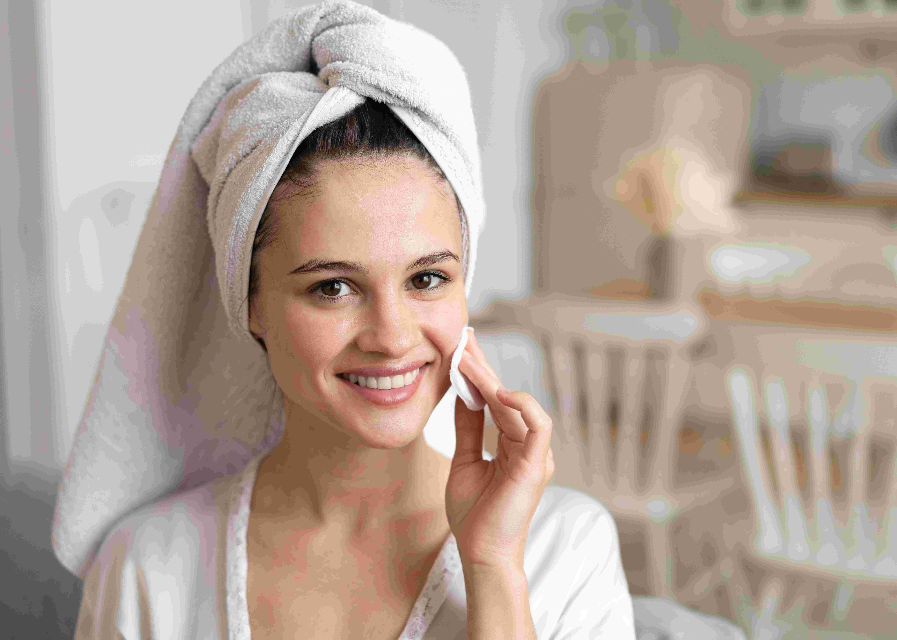

Categoría: Cuidado Facial

Sérum revitalizante

Limpiador facial
Sobre Cuidado Facial
Nuestra línea de cuidado facial está diseñada para ofrecerte lo mejor de la naturaleza en cada aplicación.
Desde limpiadores suaves hasta sérums potentes, cada producto ha sido formulado con ingredientes ecológicos que
trabajan en armonía con tu piel. Nuestros productos están pensados para todo tipo de pieles, incluso las más sensibles.
La piel del rostro es nuestra carta de presentación. Por eso, apostamos por fórmulas que no solo embellecen,
sino que cuidan, reparan y equilibran la piel desde el interior. Sin parabenos, sin siliconas, sin ingredientes artificiales.
Con el uso continuado, notarás una piel más luminosa, suave y revitalizada. Descubre tu nueva rutina de belleza natural
con Belleza Pura. Cuidar tu rostro nunca fue tan sencillo y efectivo.
Empieza por lo esencial: limpieza, hidratación y protección. Después, déjate llevar por texturas sensoriales y aromas delicados
que transformarán tu rutina diaria en un auténtico ritual de bienestar.